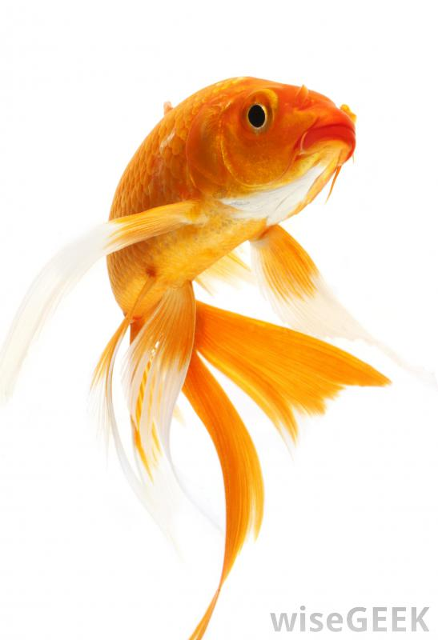
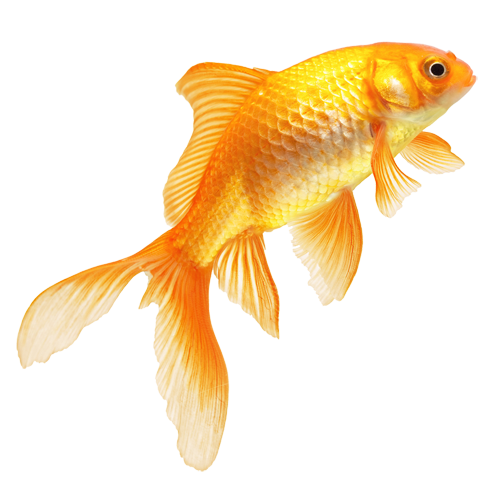

you might think that goldfish are little and orange, but their not like that all the time.
goldfish can grow up to 20 feet long, and they might get to a point where they are almost completly white.
if you have more than one goldfish it would be better to have a tank instead of a bowl.
it wouldn't be a good idea to put goldfish in a tank with another type of fish because they might eat eachother.
a goldfish life span is 30 years [in captivity]
higher classification: carassius
rank: species
 